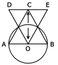
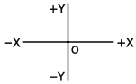
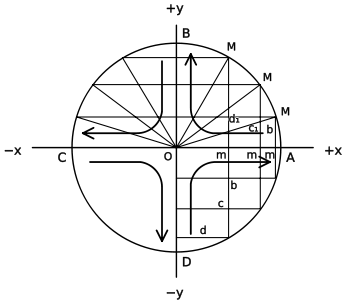
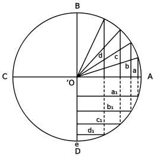

Беседа 735 от 3877 · Беинса Дуно
Съграждане на доброто
Размишление.
Прочете се резюме от темите: „Приспособление на човешката душа“.
Прочетоха се няколко от работите върху темата: „Най-добрият метод за самообладание“.
Учителя: Да излезе един от вас на черната дъска! Ще се постараем да развием заедно тази тема, която е изразена чрез този чертеж. Кажете ми, кой е по-силен: който прави зло или който прави добро? Който се качва на планината или който слиза?

Ученикът: Законът във физиката е следният: има една крайна точка, до която може да достигне едно движещо се тяло. И когато в движението си нагоре тялото достигне своята крайна точка, то е изгубило всичката си кинетическа енергия; енергията му вече се превръща в потенциална. От тази точка то започва да слиза надолу и събира наново своята енергия. За геометрично представяне на движенията може да служи следната координатна система: тя представлява две взаимно перпендикулярни оси, които се пресичат в точка O, която се избира за начало на координатната система. Началото определя посоките върху двете оси. Надясно от точка O по хоризонталната ос посоките се смятат положителни (+X), а на ляво – отрицателни (−X). Нагоре по оста посоката е положителна (+Y), а надолу – отрицателна (−Y).

Ученикът: Енергията е пропорционална на височината. По-висше добро изисква повече сила и обратно.
Учителя: Да кажем, че от +Y пада едно тяло и върви по права линия, но, ако има голямо съпротивление, то прави известно отклонение.
Ученикът: Зависи от и от тежестта на тялото. Ако пуснем една перушинка отгоре във въздуха, тя пада по крива линия, а не по права.
Учителя: Представете си, че пущаме от точката +Y две тела. Едното тежи 10 кг., а другото – 1 кг. Какво ще стане?
Ученикът: Във физиката съществува следният закон: всички тела в безвъздушното пространство падат с еднаква скорост, а във въздуха леките тела падат по-бавно, тежките – по-бързо.
Учителя: Добре, като имате предвид, че едно тяло при преминаването си в по-гъста материя прави по-голямо отклонение, същият закон ще приложите и във вашия живот. Да кажем, че днес имате отлично настроение, радостни, весели сте. То представлява движение нагоре. Но утре това движение се сменя и във вас се заражда скръбно състояние – то е движение надолу. Вие забравяте старото положение и взимате обратно движение – назад. От това ще заключите, че средата, в която се движите, е по-силна от вашата воля. Следователно тя ви заставя да се върнете назад.
Ученикът: Ако допуснем една най-висока точка, до която човек може да достигне в движението си нагоре, и една най-ниска точка, до която той може да слезе, тогава смяната на тия състояния – качване и слизане – може да се обясни със следния геометрически чертеж:

Учителя: Тогава, какво мислите, как се образуват състоянията у вас, сами по себе си ли идат?
Ученикът: Аз мисля, че човек пътува през различни среди и възприема различни влияния; на това се дължат разните състояния.
Учителя: Друг някой да каже как определят в психологията състоянията на човека?
Ученик: Зависи от това, кое в съзнанието на човека е меродавно в дадения момент: дали то е нещо предметно, дали е една емоция, една мисъл или един волев импулс, според което и състоянието на съзнанието получава един или друг тон, една или друга окраска или сила.
Учителя: Често хората се запитват какво е физическото състояние на някой човек. Ние трябва да започнем от видимото към невидимото. Какво подразбира това?
Ученикът: Дали известен човек е здрав или болен и какво е неговото материално състояние.
Учителя: Значи, това подразбира дали той си има парици, ниви и т.н. И според това, колко къщи и колко ниви има, ще определите какво е неговото материално състояние. Ако има 100 декара земя, две къщи и еди-колко си приход, казвате, че материалното му състояние е добро. После запитвате какво е здравословното му състояние, тялото му. След това се интересувате от умственото му състояние и най-после от духовното му състояние. И тъй, физическото състояние се определя от богатството на органическите сили в човека; умственото състояние се определя от богатството на мислите, а духовното състояние се определя от богатството на чувствата. Всяко състояние може да се измени. Как? Да кажем, че вие имате 100 000 лева капитал. Това е вашето състояние. Имате и един съдружник, който няма нито пет пари, но е умен. Вие му давате капитала си и го правите съучастник в печалбата. Обаче, след като търгувате една година, изгубвате 50 000 лева от вашия капитал. Вашето състояние се е изменило, нали? (– Да.) С колко? (– С петдесет на сто.) Значи, два пъти се е намалило, и при това, загубвате и печалбата. По колко се пада всекиму? Вие имате 50 000 лева загуба от капитала, при това загубени са и 5 000 лева от печалбата.
Ученикът: Загубата е 50 на сто и още 5 000.
Учителя: Как ще определите състоянието на вашия съдружник? Той нищо не е имал, следователно с какво се е изменило неговото състояние в сравнение с общия капитал?
Ученикът: С 2 500 лева от загубата, която трябвало да получат.
Учителя: Втората година пък загубвате и другите 50 000 лева от капитала и още 5 000 от печалбата. Тогава вашето състояние съвсем ще се измени, ще загубите вашето разположение. С колко ще се измени разположението на другия? – С 5 000 лева ще се измени. Единият е загубил съвършено всичко, а другият само 5 000 лева за години. Следователно състоянието и на двамата се е изменило. Онзи, който е загубил 100-те хиляди лева, цялата нощ няма да спи, ще се разхожда нервен, възбуден, а съдружникът, който не е внесъл нищо, е по-спокоен. Защо? Защото нищо не е изгубил. Той е изгубил само част от своя труд. Първият губи 100 на сто, а вторият губи само очакваната печалба. Това е физически закон – слизане надолу. Обратният закон е качването нагоре. Да кажем, че те имат първата година 100 000 лв. капитал и 10 000 лв. печалба; втората година имат още 10 000 лв. печалба. Сега материалното състояние и на двамата се подобрява във възходяща степен. Този закон важи еднакво за всички. Щом влезете в едно общество, все ще вложите известен капитал, т.е. при сегашните условия все ще бъдете съдружник някому – или с капитала, или с труда си. При сегашните условия никой не може да бъде свободен. Ако нямаш нито пет пари, но си умен, ще ти кажат: ела при мене, ти си умен човек; аз имам капитал, а ти – ум, ще започнем да работим заедно. И при този капитал или ще спечелите, или ще загубите. Туй е сега кармически закон: родил си се в известен период, правил си грехове, престъпления, без да мислиш, че се държи сметка за всичко. Не мислете, че като сте дошли тук, няма да плащате. Ами тази загуба? Знаете ли колко енергия е вложена във вашето физическо тяло, колко енергия е изразходвана за създаване на вашето сърце, колко за вашия ум, колко за вашата воля? Всичката тази енергия е точно изчислена. Следователно загубата, която има в този период, ще се изчисли и след 50 000 години ще ви намерят, било като англичанин някъде, като французин или какъвто и да е и ще ви кажат: вие като българин дължите, имате да плащате 500 000 лева и трябва да ги платите. Имате един такъв кармически дълг. Какво ще се случи при изплащането на този дълг? – Ще се родите сляп, сакат, хилав човек и през целия си живот само ще плащате.
Сега, аз искам да ви наведа на най-добрия метод за самообладание. Ще се спрете, ще кажете: трябва да се плаща! Всички вие грешите, като казвате, че няма да плащате. Не, ще се спрете и ще мислите върху този закон. Щом размишлявате върху него, ще имате печалба най-малко 50 на сто. Вие не размишлявате върху този закон и като ви дойде някое страдание, казвате: аз се докачам. Спри се, кажи си: не, аз имам да мисля върху по-важна работа, трябва да отговарям за своите дългове. Струва ли сега да се спра на пътя и да разговарям за моето честолюбие, когато имам предоставена по-важна работа? Знаете ли на какво мяза докачението на хората? Господарката праща своя слуга – едно малко момче – да купи мляко в едно котле. Друго момче го замерва с камъни. То оставя котлето и отива да го гони. Други деца минават, бутват котлето и млякото се разлива. Момчето се връща в къщи и господарката му го набива. Казвам: това момче не може да стигне този, който го ударил, защото краката на последния са дълги, а се връща в къщи, и пак него бият. И всеки човек в света, който се спира да защитава честта си между хора, които нямат никакъв морал, всякога ще намери млякото си разсипано, другарчетата му ще го бият, и господарката му също ще го бие. Този закон е верен. Понеже вие се разправяхте с другите за себе си, господарката ви пита: ти защо остави млякото на пътя?
Сега, вие мислите, че щом влезете в окултната наука, тя ще ви освободи от всичките ви погрешки. Не, тази наука може да ви даде отличен метод как да живеете по-добре. Вижте в чертежа (стр.156): единият полукръг от едната страна означава радостите, които се увеличават, а от другата страна в другия полукръг са означени скърбите, които също се увеличават.

Тия смени стават постоянно. Дойде ли ви някоя скръб ще знаете, че в това време сте почва. В това отношение в природата съществува следният закон: върху всяка скръб някъде в духовния свят се повдига едно велико желание. Значи, в дадения момент вашата скръб служи за създаване на едно благородно чувство някъде. И вие трябва да се радвате на тази велика мисъл, на това велико желание или чувство, което се гради върху вашата скръб. След време тази велика мисъл, която се е съградила върху вашата скръб и вашите страдания, ще ви се отплати. Тя ви познава и ще ви помогне, тогава скръбта ви ще се превърне в радост.
Казва Христос: „Сега скръб имате в света“. Това значи: „Сега сте почва, но аз ще ви видя и скръбта ви ще се превърне на радост“. Голямата погрешка, която забелязвам във вас, т.е. не погрешка, но едно неразбиране на закона, то е, че вие всякога искате да бъдете големци, да растете все нагоре. Не може така, вашият растеж ще се спре. Така е и в природата. До 25 юни всичко расте, а после всяко растене спира. То значи, че енергиите се прекратяват. Пък вземете и вашето тяло: докато сте малко дете, вие растете нагоре, но не стигате до слънцето. Израствате най-много един и половина-два метра. После това растене спира и се пренася в другите полета: във вашия мозък, във вашето сърце, във вашата душа и във вашия дух. Щом физическото растене спре, онзи, който не разбира законите, удря само на ядене и пиене и казва: ние остаряхме, нека поне си отядем и отпием, това ще ни остане. Онзи пък, който разбира закона, започва да учи. Затова старите хора повече четат, повече учат, а младите са много разсеяни, освен ако младият се е родил някой гений. Та едно скръбно състояние представлява в природата един плюс. В известен случай то може да означава зло. Значи, в известна епоха злото е плюс, то има надмощие, а в друга епоха доброто е плюс, то има надмощие.
(– Нали човек дружи с много хора?) – Не, в даден случай човек може да дружи само с едного, а другите оказват само известно влияние върху него. Например, планетите оказват известно влияние върху Земята, а Земята дружи само с кого? (– Със Слънцето.) Да, Земята дружи само със Слънцето. Закон е: в даден случай вие може да дружите само с едного, а другите оказват влияние върху вас. От другите, които оказват влияние, всеки от тях дружи само с едного. Друженето е цел вече, вие принадлежите към някоя планетна система. Разните индивиди принадлежат към разни психологически системи.
Онзи закон, който искам да извадя от казаното или онази мисъл, която искам да остане в ума ви е, че при всяко съзнателно страдание се извършва нещо велико. Всяко страдание, което вие чувствате, не се отнася само до вас. В дадения случай и други същества чувстват това страдание, даже още по-тежко, отколкото вие. Следователно хиляди и милиони души в даден случай са като основа, върху която в духовния свят се гради едно велико благо, и вие трябва да вземете вашия дял.
Нека разгледаме сега триъгълника ACB.
Кой е човекът, който прави добро? – Най-добрият е този, който представлява триъгълника ACB. В такъв случай триъгълникът DOE представлява най-лошия човек. Тези двама души са активни, показват движение. Те са от една съща категория. Освен тях ние имаме още: най-добър лош човек и най-добър добър човек; и двамата са активни, също образуват една категория. Най-после имаме и трета категория хора, а именно: най-лошият добър човек, който не прави добро и най-лошият лош човек, който не прави зло. Тези хора са негативни. Но този, който не прави зло, е по-добър, въздържа се от злото; а онзи, който не прави добро, е по-лош в случая.
Ученикът: Това нещо можем да означим по следния начин: добър, не прави добро – Д. Н. Д. (+ −). Той е добър човек, значи плюс (+), обаче не прави добро минус (−). За другия човек казваме: лош, който не прави зло – Л. Н. 3. (−+). Това значи: той е лош минус (−), обаче не прави зло, значи плюс (+).
Учителят: Сега да приложим закона. Да кажем, че в дадения случай вие правите добро. После вашето състояние се сменя и казвате: не искам да правя добро. Някога става и обратното. Например имате един престъпник, който убива сина на някой гражданин и го осъждат на смърт, понеже прави зло, лош човек е той. Питам: може ли да се измени неговата съдба? – Може. Ето при какъв случай: този престъпник избягва от затвора, минава покрай една река и вижда, че царската дъщеря се дави. Той се хвърля и я избавя. В това време го хващат. Питам: ще приложат ли смъртното наказание върху него? (– Няма.) Да, няма да го приложат, понеже той спасява дъщерята на царя. Значи неговото наказание се анулира. Това се случва в живота. Затова някой човек, като извърши едно престъпление, трябва да извърши и едно добро, т.е. той трябва да избави царската дъщеря, за да не приложат върху него смъртното наказание. Най-първо той е направил едно престъпление, минус (−), а после е направил едно добро, плюс (+), компенсира се. Ако ти извадиш из водата давещата се царска дъщеря, смъртното ти наказание се отменява. Всяко страдание в света, това е едно смъртно наказание, нещо умира в тебе, ти страдаш. Затова именно вие трябва да се стремите да използвате за добро всичките условия, които ви се дават. Те са за вас плюс. Ако този престъпник каже: нека се дави царската дъщеря, няма да я спася! – присъдата му ще се приложи,
И тъй, от всички ви се изисква приложение. Това засега е само теория. В това отношение, когато разглеждате вашите състояния, трябва да бъдете много внимателни. Защото всяко състояние може моментално да се измени. Вие често забелязвате в класа, че някой от вас не е разположен. Вие си казвате: Нека си носи той! – и не се интересувате за него, отминавате си. Но няма да мине дълго време и това състояние ще се върне върху вас. Затова, като ученици от такъв един клас у всички ви трябва да има стремеж като видите, че някой от вас е морално разклатен, да се яви у вас желание да му помогнете. Не всички, но един трябва да му помогне в случая (– В какво седи това морално помагане?) Във вас още няма това чувство, аз го наричам „любвеобилност“ – да желаете доброто някому, без да го познавате, да му изпращате хубави мисли. Любвеобилността мога да уподобя на разположението, което има някое растение, което расте покрай водата. Засега, ето как вие се познавате. Казвате: Този е един от братята! – Вие не можете бъдете взаимно толкова любвеобилни. Вие мислите всякога само за себе си, само за своето добро. Където и а ходите, мислите само за своята личност. Не, човек трябва да има и други мисли. Той трябва да мисли само 50 на сто за себе си – това трябва да е един максимум, и 50 на сто за окръжаващите го, ако иска да изпълни Божия закон. Човек не трябва да занемарява себе си, но не може да занемари и своите ближни. Вследствие на това се зараждат боледувания. Когато бащата и майката се карат, децата почват да боледуват. Често майката казва: аз не искам вече тия деца. И бащата казва същото. И ако няма някой техен роднина да ги подкрепи, току видиш едното дете заминало, другото заминало и т.н. Там, дето има обич между родителите, децата са здрави. Същият закон е среща и в един клас. Всякога трябва да имате любов помежду си; аз не говоря за вашите временни проявления и промени на чувствата, но за ония правилни чувства за висша любов, които трябва да храните един към друг. Проявявайте Божественото във вас, това, което е благородно и възвишено. Щом го проявявате, вие усещате едно вътрешно задоволство. Минават дни и седмици, но вие усещате една дълбока радост. Никой не знае това, само вие го знаете.
Та първото нещо: трябва да бъдете герои в малките работи. Някой път казвате за някого: той си има карма, нека си я носи! Не, този цирей трябва да излезе от него, той има нечиста кръв. Аз мога да му туря един лек и да улесня неговите страдания. Този човек може да има една рана, но не я лекува. Ти казваш: Карма е това! Не, аз като човек трябва да му помогна, да улесня неговата карма, да мине малко по-лесно. И вие ще спазвате този закон. Щом не се стремите нагоре, иде повръщането назад. Някой казва: Нагоре, докато стигна до B. Но забележете: стремлението към доброто никога не може да се спре. Процесът към доброто е вечен. И ако някой се спре в пътя си от доброто, за това има друга някаква причина. Доброто е безкрайно; тази причина е извън него. Допуснете, че някой човек е искал в първо време да стане филантроп, да помага на човечеството. Това е пътят му нагоре към доброто. Обаче, вън от него друга една мисъл му влияе и у него се заражда желание да стане пръв министър в България. Туй ще спре неговата филантропия и той ще се повърне назад. Този човек, като държавник вече, не може да има стремеж към Бога. И всички общественици вървят надолу. Щом станеш политик, ти непременно ще се върнеш надолу, но и като се връщаш, т.е. като слизаш, трябва да разбираш законите. Защото може да слизаш разумно, може да слизаш и неразумно. Запример, гнева аз наричам дипломация. Човек, който се гневи, той е пръв министър. В момента, когато се разгневи, всички ги е страх от него. Когато майката се разгневи, всички се сгушват: и бащата, и децата се страхуват. След един-два часа обаче тя вече е грохнала, разболява се, слязла е вече от висотата на своето министерство, не е пръв министър, а уволнен министър в оставка.
Та някой път и вие казвате: искаме да бъдем министри, царе. Питам: кой от вас не е ставал цар за 5–10 минути? Нали знаете онзи разказ за циганина, който носил гърне с мляко и си въобразявал, че станал цар и заповядвал на света. Въобразявал си всичко това и подскочил от радост, но гърнето паднало на земята, счупило се и млякото се разляло. Често и вие при тия малки гърнета, при тия малки блага и способности, които имате, мислите си, фантазирате си, докато дойдете до въображаемите големи блага и подскочите от радост, но паднете на земята и се намерите в един реален свят.
Има ред закони обаче, които регулират живота. Можем да изчислим математически какви са възможностите, за да може един човек да стане цар, например. Да кажем, че в България има 4 милиона хора, които имат нужда от цар. Значи, възможността за всеки един от тия 4 милиона да стане цар е 1 / 4 000 000. Тъй щото, най-близките цели на всеки човек засега са определени. Всички могат да бъдат добри, но всички не могат да бъдат богати. Ако всички хора рекат да станат добри, има възможност, но ако всички хора се стремят да станат богати, няма възможност за това. Искат ли да станат богати, ще се яви едно състезание и ще се роди злото. Но ако всички пожелаят доброто, няма да се яви състезание, понеже тази възможност съществува за всички.
Сега, изваждам друго правило: ако у вас някой път се зароди едно лошо желание, това показва, че вие се стремите към неща, които спадат към изключенията. В такъв случай у вас ще се зароди омраза, съмнение, недоволство. Те са спътници на непостигнати желания. Затова ще желаете Любовта – тя е постижима за всички. Ще желаете Мъдростта – тя е постижима за всички. Ще желаете Истината – тя е постижима за всички. Ще желаете Добродетелта – тя е постижима за всички. Ще желаете Правдата – тя е постижима за всички. В този живот това е постижимо.
Да бъдеш мъдър човек не значи да бъдеш учен. Всеки може да бъде мъдър, но учени хора могат да бъдат малцина. Затова всички се стремете да бъдете мъдри, но не се стремете да бъдете непременно учени. Мъдростта е постижима за всички. Всички не може да бъдете красиви, защото красотата е нещо, което лесно може да изгубите. Тя не е постижима за всички. Да бъдете красиви, това не зависи от вас, но душата ви може да бъде изпълнена с любов. Това зависи от вас. Всички можете да добиете Любовта. Тия неща не се добиват с векове, но моментално. Мъдрият човек е много досетлив, внимателен към всичко. Дето и да се намери, всякога ще знае как да постъпи и ще се прояви скромно. Той е много практичен. Ако се намери в университет, той ще си отвори пътя, ще вземе инициатива за това, за онова, и така професорите ще го обикнат. На мъдрия човек всички професори искат да услужат. Той ги разбира и те го разбират. А онзи, който не е мъдър, на него показват вратата на университета и му казват: тук не е място за слуги. Има случаи, дето слуги са заемали мястото на професори, изучили са цялата материя на професора. Един ден професорът не идва, слугата заема мястото му, държи встъпителна лекция по всички правила. И когато професорът дохожда, слугата казва: „Извинете, аз държах лекцията вместо Вас.“ Професорът му отговаря: „Много добре си направил, станал си мой заместник.“ У този слуга няма амбиция, но професорът се компрометира. Туй се казва мъдър човек. Такъв човек след време може да стане учен. Най-напред човек трябва да бъде мъдър. Мъдър ли е, всичко се добива. Учението е извор на Мъдростта.
Тайна молитва.
– Бог на Любовта не е Бог на мъртвите, а Бог на живите!
28. лекция на Младежкия окултен клас,
държана от Учителя на 27.ІV.1924 г. в гр. София.